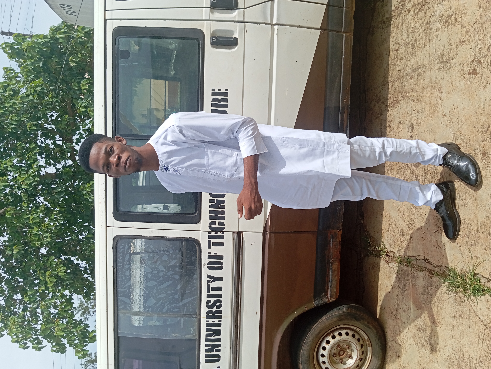

Okoronkwo Kelechi

Summary
I am a very dedicated worker and I am great at adapting to circumstances around me. I have experience in Teaching, Research and Engineering drawing
Education
- SSCE at Graceland Heights, Ibadan, Oyo state, Nigeria (2013-2019)
- B Eng. in Mining Engineering at Federal University of Technology, Akure (FUTA) (2019-2025)
- Full stack Web development class under the tutelage of Angela Yu (2024)
- Jobberman Softskills training (2023)
Work Experience
- Labour Prefect - Graceland Heights
2018-2019
- Coordinate preparations for several events at the School auditorium
- Participated in Sanitation projects with the school
- Exhibited Leadership skills in addressing and organizing students for tasks while in office
- Education Manager - AIESEC In Akure F & L
April 2024 -
- I am currently the Education Manager for Finance & Legalities in AIESEC In Akure
- Handled the Education plan as directed in the NEC for Q2 2024
- Team Leader - Echoblast (Entrepreneurship Project)
2023
- Led a team of 10 people in making research and preparing the Feasibility Report on establishing a Drilling & Blasting company in Kuje, Abuja.
- Developed a plan for tapping into the market - Market Analysis
- Team Leader - Technical Report Writing
2023
- Led a team of 10 people in writing a Technical Report on Reclamation in Mining Engineering
Skills
- Google Workspace - ⭐⭐⭐
- Microsoft Office - ⭐⭐⭐
- Oil well log interpretation - ⭐⭐
- RocScience and Dips software - ⭐⭐
- Machine drawing - ⭐⭐⭐⭐
- Leadership Skills - ⭐⭐⭐⭐
- Organizational Skills - ⭐⭐⭐⭐
Awards
- Jobberman Softskill Training Ceertificate - Jobberman (2023)
- First Class Honors - FUTA (2024)
- Member of the Quarter Q2 - AIESEC In Akure F & L (2024)
Contact

Hobbies